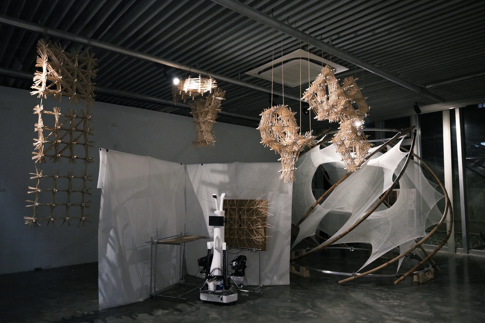
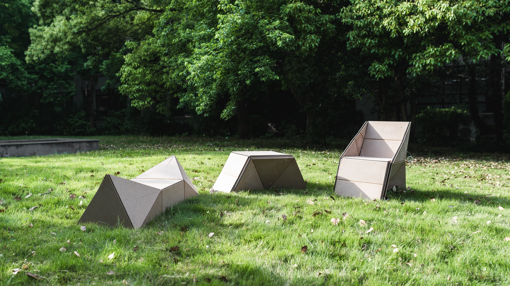
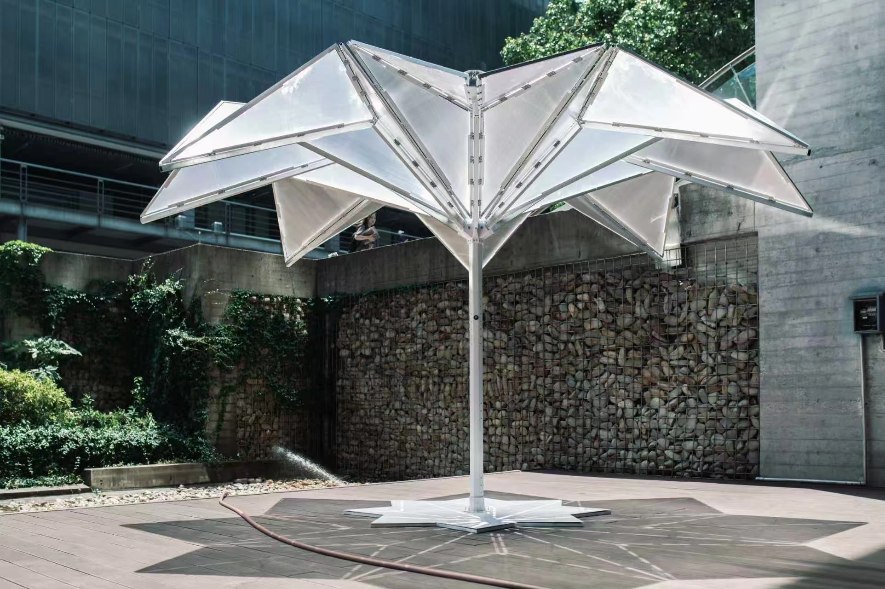
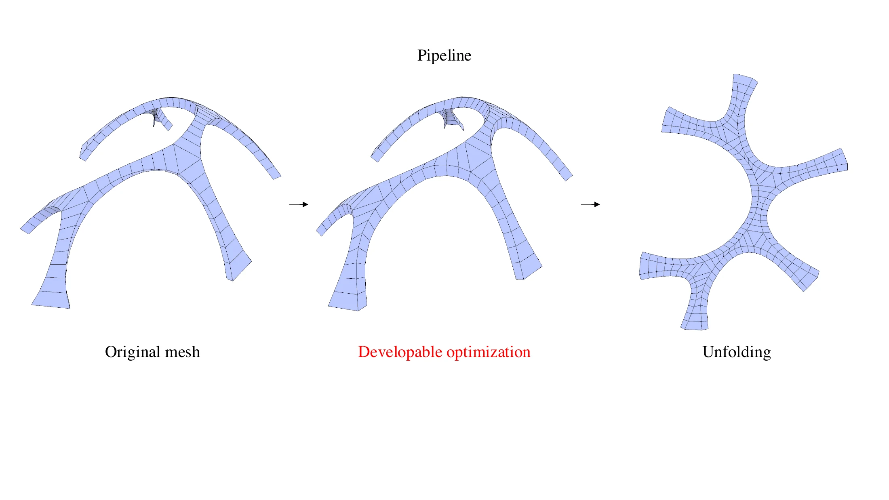
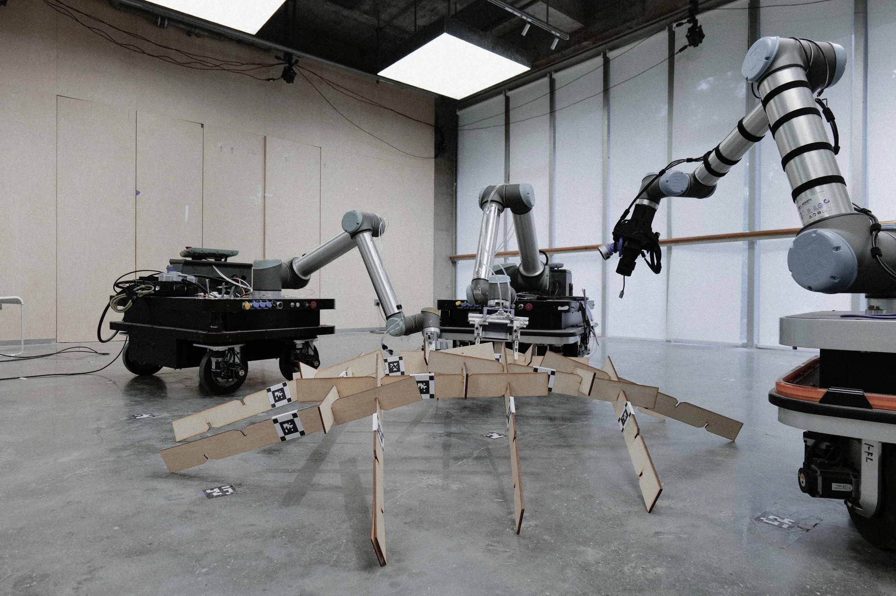
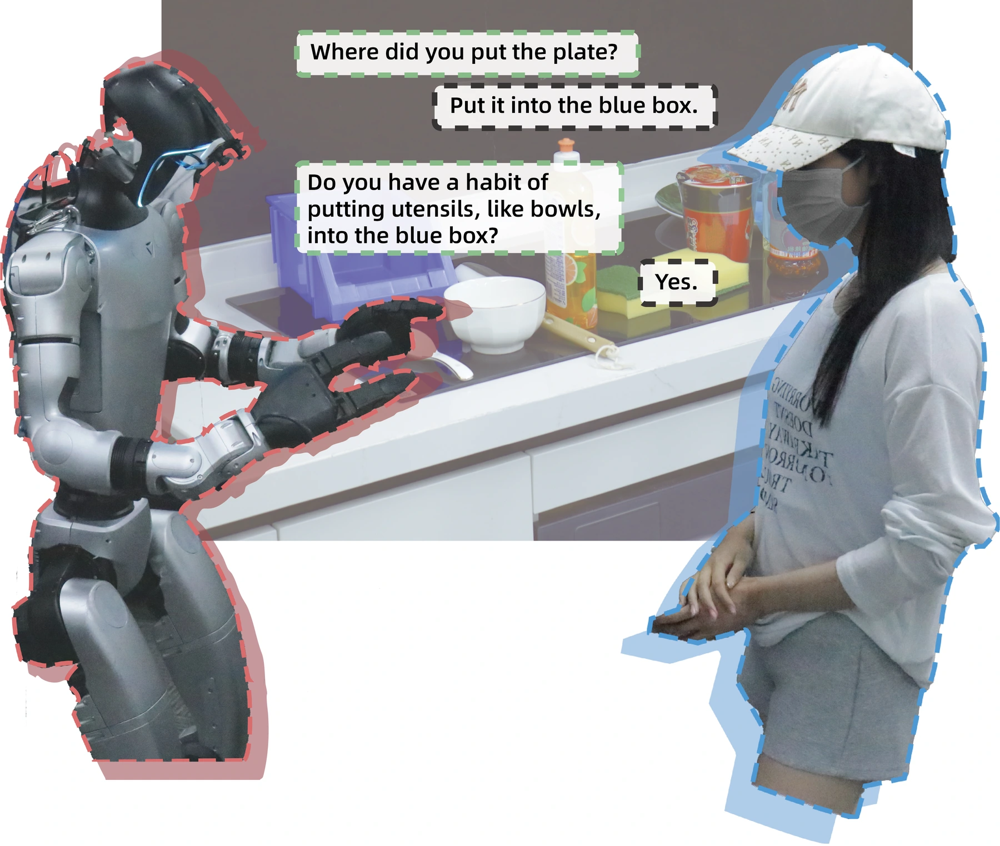

Multi-objective optimization of finite-length willow paths
I am a research assistant at the College of Architecture and Urban Planning, Tongji University. I received my Bachelor of Architecture from Tongji University in July 2026.
My research focuses on computational methods for improving or reshaping design workflows. I explore how feedback between geometric design, structural analysis, and fabrication can inform design decisions and the organization of these stages.
My project experience spans folding and deployable structures, willow weaving, and robotic assembly. Across these projects, I have worked on geometric modeling, structural analysis, workflow development, and physical prototyping.

Multi-objective optimization of finite-length willow paths

Origami-inspired triple furniture from one sheet

Vector-based graphic statics in deployable architectural design

Curve-crease shell fabrication using developable approximation

Multi-robot collaborative assembly of reciprocal shells

Questioning strategies for robot learning in household tasks
IASS Annual Symposium and 3rd Italian Workshop on Shell and Spatial Structures (IASS–IWSS 2026). Accepted conference paper; publication pending.
Architectural Society of China Computational Design Academic Conference (CDAC 2025). Accepted conference paper (in Chinese); publication pending.
Humanistic Computation & Intelligence: Proceedings of the 31st International Conference on Computer-Aided Architectural Design Research in Asia (CAADRIA 2026), Vol. 2, pp. 553–562. DOI: 10.52842/conf.caadria.2026.2.553.
Proceedings of the 13th International Conference on Human-Agent Interaction (HAI 2025), pp. 456–457. Conference poster paper. DOI: 10.1145/3765766.3765862.